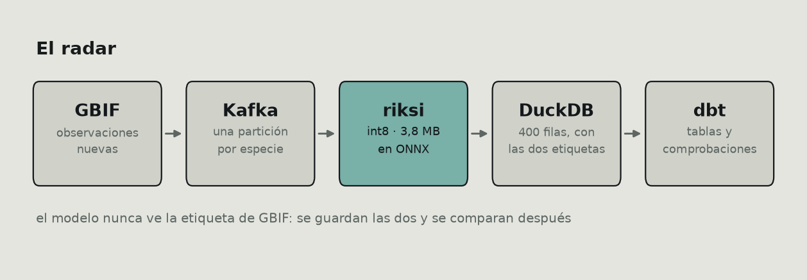

machinelearning, python, mlops, datascience · Ctrl+P to save as PDF
I trained a classifier for 100 Ecuadorian species, built a pipeline to watch it work on real observations, and put an agent on top. Three repos, about three months.
This post isn't about how I built them. It's about how every time I measured something properly, the number went down — and how that's the job, not a setback.
Four cases. In all four the first number was defensible, published, and misleading.
Just enough to follow the rest:
| riksi | EfficientNet-Lite0, 100 species, 3.8 MB in int8. Runs in the browser via ONNX Runtime Web |
| riksi-radar | Kafka → the model → DuckDB → dbt. Pulls new observations from GBIF and classifies them without seeing the label |
| yachaq | An agent over all of it: RAG, memory, MCP server |

The model gets 79.8 % top-1 on 1000 validation images. That one is measured correctly and isn't among the numbers that fall apart.
Worth stating up front is how it got to 3.8 MB, because it's the one decision in the project that came for free:
That's the trade: 0.4 accuracy points for a model 3.5 times smaller. For a classifier that has to download into someone's browser on mobile data, there's nothing to discuss.
Validation images come from the same split as training: same sources, same photographers, same framing bias. 79.8 % there answers a fairly narrow question, and not the one that matters. The one that matters is what happens when a photo nobody picked shows up.
That's what the radar is for. The idea is simple: take observations uploaded to GBIF after training, by different people, and run each photo through the model without letting it see the label. Then compare.
400 observations. 337 correct: 84.2 %.
Six points above the validation bank. I wrote it in the README with "goes up" in bold.
It's wrong. Not the arithmetic — the bias.

The left panel is the problem: one species, the marine iguana, is 128 of the 400 observations. The top three combined are half the set, and out of the 100 species the model knows, only 20 show up at all.
Citizen science doesn't sample uniformly. People photograph what they see, and in the Galápagos they see marine iguanas. That 84.2 % is mostly the model's grade on one species, repeated 128 times.
And the right panel shows why that inflates the number rather than sinking it: the marine iguana is among the species it handles best (94.5 %). The set is dominated by an easy case.
Averaging per species instead of per observation — giving the iguana the same weight as the turtle that shows up three times:
| accuracy | |
|---|---|
| per observation | 84.2 % |
| averaged over species | 78.7 % |
It's two lines of SQL apart:
-- per observation: every photo weighs the same
select avg(coincide::int) from observaciones;
-- per species: every species weighs the same
select avg(tasa) from (
select especie, avg(coincide::int) tasa
from observaciones group by especie
);And there's the interesting part: 78.7 % in the field against 78.0 % on the bank. The model doesn't do better outside its split. It performs the same.
Which is a more boring conclusion and a far more credible one. "No drift" is a result; "improves in production" was an artifact of how I averaged.
If you're publishing one number over citizen-science data, average per class. The per-observation mean measures your data distribution as much as your model.
A fair objection: 400 observations fit in a CSV. What's Kafka for?
Because the real number isn't 400. GBIF receives roughly 130,000 observations a day from Ecuador alone, and 1.6 % of those fall in the hundred species the model knows — about 6,000 daily. The 400 are a slice for measuring, not the flow.
Even so, the lesson from building it was a different one. Kafka wouldn't start, and the error pointed at the wrong place:
advertised.listeners cannot use the nonroutable meta-address 0.0.0.0I had already overridden advertised.listeners. It took four attempts to see the complaint wasn't about that one, but about the controller listener, also on
0.0.0.0, which Kafka derives its advertised address from:
# the one that matters is the second, not the first
listeners=PLAINTEXT://0.0.0.0:9092,CONTROLLER://localhost:9093
advertised.listeners=PLAINTEXT://localhost:9092And a second, quieter one: Kafka kept declaring the consumer dead. By default it hands over 500 records per poll() and expects the next one within five minutes. Downloading and classifying 500 photos takes far longer, so Kafka reassigned the partitions and the commit failed with "the group has already rebalanced" — losing work already done.
consumidor = KafkaConsumer(
TEMA,
max_poll_records=20, # batches that actually fit the interval
max_poll_interval_ms=900_000,
enable_auto_commit=False, # commit after the batch, not before
)The enable_auto_commit=False is the important part: with auto-commit, Kafka marks as processed what you're still downloading, and if the process dies halfway those observations never come back.
That left 63 observations where the model and GBIF disagreed. Three possible explanations: the model was wrong, the observation is misidentified, or the photo doesn't show what the record claims.
I wrote in the README that the pipeline doesn't decide which, and that the Galápagos tortoises showing up repeatedly were "taxonomy disputed among biologists."
I made that up. It sounded plausible and I never checked.
Turns out there's a fourth explanation, and it's checkable: GBIF publishes periodic snapshots, not a live mirror of iNaturalist. An observation iNaturalist already corrected can still sit in GBIF under the old identification.
You verify it in two hops. GBIF stores the iNaturalist identifier in
catalogNumber, so you can ask what the identification is today:
def _en_inaturalist(clave_gbif):
oc = _pedir(f"{GBIF}/occurrence/{clave_gbif}")
id_inat = oc.get("catalogNumber") # the link back to the source
d = _pedir(f"{INAT}/observations/{id_inat}")
o = d["results"][0]
return {"taxon_hoy": (o.get("taxon") or {}).get("name"),
"grado": o.get("quality_grade"),
"identificaciones": o.get("identifications_count", 0)}(The iNaturalist API's photo_id parameter looked like the shortcut. It doesn't filter: it returns all 382 million results. Silently ignored.)
All 63, two minutes of requests. 24 carry a different label today.
But there's a trap I nearly walked into. Not every change means the same thing:
| change | what it is |
|---|---|
Anous stolidus → Anous stolidus galapagensis | refinement: the population was narrowed down, the species is the same, the model was still wrong |
Chelonoidis porteri → Chelonoidis niger porteri | a different species: it now hangs under C. niger |
In the second case the model had said Chelonoidis niger. Under today's taxonomy, it was right. The Santa Cruz tortoise became a subspecies of C. niger and GBIF still had the previous version.
Counting those separately is the whole difference between a finding and self-deception, so the judging logic is the one piece with a real test:
def _juzgar(caso, hoy):
gbif, dice, ahora = caso["gbif"], caso["modelo"], hoy["taxon_hoy"]
if ahora == gbif: return "unchanged"
if _es_hijo(ahora, gbif): return "narrowed"
if ahora == dice or _es_hijo(ahora, dice): return "the model was right"
return "species changed"_es_hijo compares word by word rather than with startswith, which would accept a match halfway through a word:
def _es_hijo(taxon, especie):
partes, base = (taxon or "").split(), (especie or "").split()
return len(partes) > len(base) and partes[:len(base)] == base
assert not _es_hijo("Anous stolidusa", "Anous stolidus")
assert not _es_hijo("Anous stolidus", "Anous stolidus") # nor its own child
assert _es_hijo("Chelonoidis niger porteri", "Chelonoidis niger")The result:

Eight out of 63 weren't errors. And all 63 are research grade on iNaturalist — identifications the community already confirmed — so the other 55 have nowhere to hide.
And it still needs discounting. All eight are the same taxon. Removing them lifts the per-species mean from 78.7 % to 81.2 %, but that fixes one species out of twenty and none of the rest: it's the Case 1 bias coming back through another door. The number I'd still publish is 78.7 %.
What it does leave is something reusable: GBIF had 13 % of the records I checked out of date. Anyone training on GBIF data without cross-checking it is inheriting that lag.
The agent has a RAG over the fact sheets for all 100 species. The usual question: above what similarity is a retrieved sheet actually relevant?
I set 0.5. Round number, no reason behind it.
What you need to measure isn't the mean similarity, it's whether the two populations separate: questions the corpus can answer versus questions it can't. If their distributions overlap, no threshold is good — the number isn't the problem, the index is.
def mejor(p):
fragmentos, vectores = _cargar()
return float((vectores @ vectorizar([p])[0]).max())
buenas = sorted(mejor(p) for p in con_respuesta) # worst first
malas = sorted((mejor(p) for p in sin_respuesta), reverse=True) # best first
corte = round((buenas[0] + malas[0]) / 2, 2)
if buenas[0] <= malas[0]:
print("THEY OVERLAP: no threshold separates them.")What gets compared is the worst of the good against the best of the bad. If that comparison inverts, no threshold works and the problem isn't the number: it's the index.
They did separate, with a 0.075 gap. The midpoint lands on 0.44, not 0.5.
The "unanswerable" questions are deliberately alien — "when did Blade Runner come out?", "rice pudding recipe". If the index doesn't reject those, it rejects nothing.
The bonus came from trying to shrink the index, which took 235 MB, 192 of them the vocabulary table: 250,000 tokens covering some 50 languages, of which this project uses 8,403. Looked like dead weight.

Prune to 120,000 terms and the index gets 40 % smaller while the threshold stops existing: there's no gap left to split. Without measuring the separation that cut looks free — the system keeps answering, it just no longer knows when to stay quiet, which is the only thing keeping a RAG from making things up.
The middle ids weren't padding from other languages: they're the subwords holding Spanish together. Cutting them sinks the good questions more than the bad ones.
Not a measurement story, but the one that taught me most.
The agent had to fit a free tier: 512 MB. With fastembed, the process hit 671 MB just loading the encoder. Dead on arrival.

I rewrote inference by hand on ONNX Runtime. Two things fixed it. First, saving the weights as external data, which gets onnxruntime to memory-map them off disk instead of copying:
onnx.save(modelo, str(LIGERO / "modelo.onnx"), save_as_external_data=True, ...)
opciones = ort.SessionOptions()
opciones.enable_cpu_mem_arena = False # no arena that grows and never returns
ort.InferenceSession(ruta, sess_options=opciones)That got it to 457 MB at rest. But the peak while answering hit 467, and with 45 MB of headroom a 512 MB container dies on the first spike. That's why the second bar is still red despite sitting under the line: the number that decides isn't the resting one.
Second: releasing the session after each batch instead of holding it.
def vectorizar(textos):
with _candado:
try:
return _vectorizar(textos)
finally:
if SOLTAR:
_sesion.cache_clear()
gc.collect()Reloading costs 0.93 s, so the peak exists only while answering. 154 MB, with 358 to spare. That extra second per question buys the RAG staying on in a free tier; before, it had to be switched off entirely.
And it's not an approximation: the cosine between vectors from the two paths is 1.0 and the max component-wise difference is 0.0. It's the same computation.
Two traps along the way, both silent:
# wrong: padding counts as if it were words
v = salida.mean(axis=1)
# right: real tokens only
mascara = lote["attention_mask"].astype(np.float32)[:, :, None]
v = (salida * mascara).sum(axis=1) / np.maximum(mascara.sum(axis=1), 1e-9)enable_padding() with no arguments pads to 512 tokens. Inference that takes 0.2 s starts taking a minute, with no warning at all. You need direction="right", pad_id=1, pad_token="<pad>".I also tried quantizing the encoder to int8, like the classifier. It shrinks disk but not RAM: 252 → 135 MB on disk, and 395 → 397 in memory, because onnxruntime decompresses the weights on load. And the threshold gap narrowed from +0.101 to +0.085. Dropped.
So it doesn't read like everything collapsed:
And one engineering decision that did pay off: the agent runs on a cascade of free providers — Groq, Mistral, Cohere and three more — each with its own rate limit. When one returns 429, the request moves to the next carrying the same history. The obvious mistake I made: all three helpers started at the same provider and tripped over each other. Starting each at a different point in the cascade took it from 15 s to 7 s.
A number that goes up is suspicious. All four times a number pleased me, I was measuring my dataset rather than my model.
Average per class. On citizen-science data, the per-observation mean is nearly a description of which animals are photogenic.
Check the anecdote that sounds good. "Taxonomy disputed among biologists" sounded like I knew what I was talking about. Two HTTP requests showed it was false, and the truth turned out more interesting.
Sort changes by kind before counting them. 24 changed labels looked like 24 errors that weren't mine. It was 8. The other 16 were mine, dressed up as the same thing.
A threshold without a measured separation is decoration. And if the system still works with a useless threshold, nobody will ever find out.
Measure the peak, not the resting state. 457 MB fit inside 512 on paper. In practice the container died.
The honest part is saying where this doesn't reach:
All three repos are open, and every number in this post comes from a file in them — there's a --comprobar self-check in each module that verifies it: riksi · riksi-radar · yachaq